ANTHIVE – ergänzte Bodenkacheln
Isolierte Grafikvorschau. Sie zeigt die bestehenden Schichten mit einem verzweigten Tunnel, zusätzliche Wandkanten samt Spiegelung und die Übergänge an Schichtecken. Nichts davon ist in die laufende Spielszene eingebunden.
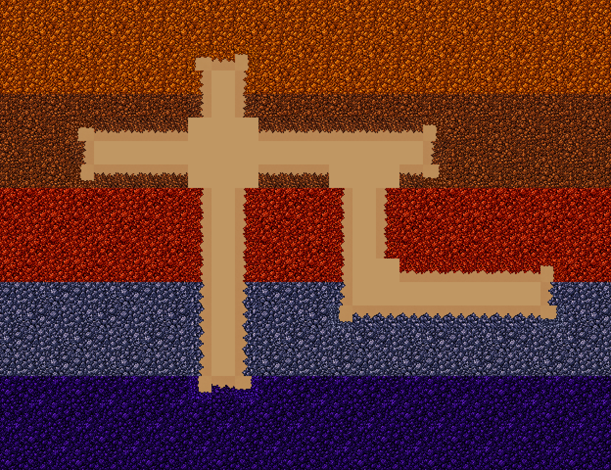
Wandkanten · drei Varianten je Bodentyp
Jede Probe ist mehrfach angeordnet; die gespiegelte Kachel zeigt die gegenüberliegende Wand.
Oberboden
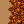
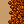
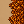
Kompakte Erde
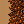
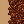
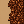
Lehm
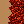
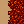
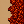
Steinschicht
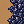
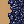
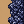
Tiefengestein
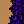
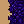
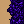
Übergänge an Schichtecken
Die vier Kacheln entsprechen den vorhandenen Übergängen zwischen benachbarten Bodentypen; ihre Eckform ergänzt die bestehenden geraden Übergänge.
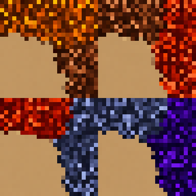
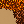
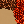
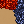
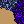